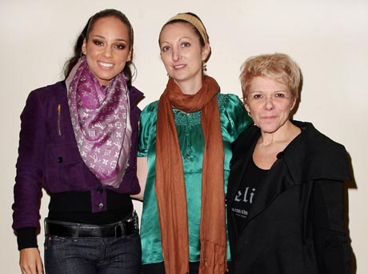

Professionaly known as Alicia Keys, Alicia Augello Cook is an American singer, songwriter, and pianist born on 25 January, 1981 in New York City, U.S.1 She was the only child of Teresa Augello and Craig Cook residing in the Hell's Kitchen neighbourhood of Manhattan. Her father is African-American, and her mother is Italian, Irish, and Scottish. Her multi-racial heritage allowed her to "relate to other cultures" as she was groing up2.
Alicia Keys has sold 17.8 million albums and 21.9 million digital songs, achieving the Recording Indutry Association of America's best-selling artists list in the United States3. She is also the co-founder and Global Ambassador of Keep a Child Alive, a non-profit organisation that provides medicine, orphan care, and social support to families with HIV and AIDS in Africa and India4.